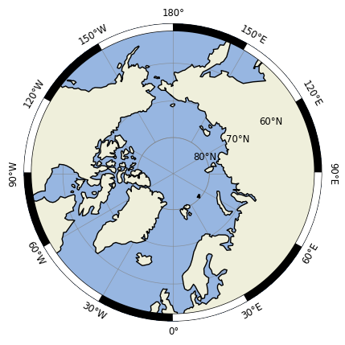
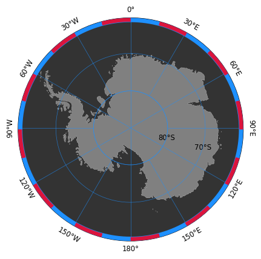

Stereographic maps#
This notebook showcases an accessor class for stereographic map plots produced with cartopy and matplotlib.
An accessor can be registered with the @register_geoaxes_accessor decorator in my_code_base.plot.maps. The accessor can be given an arbitrary name and should inherit from the my_code_base.plot.maps.GeoAxesAccessor ABC meta class, which provides some basic geographic-map related methods.
For example, the “polar” accessor is registered as follows:
@register_geoaxes_accessor("polar")
class StereographicAxisAccessor(GeoAxesAccessor):
"""An accessor to handle features and finishing of stereographic plots produced with `cartopy`.
Can handle both {class}`ccrs.NorthPolarStereo` and {class}`ccrs.SouthPolarStereo` projections."""
def __init__(self, ax):
super().__init__(ax)
...
This notebook shall demonstrate the usage of such an accessor.
Tip
This accessor works both for NorthPolarStereo and SouthPolarStereo projections.
First, let’s load some packages. The polar accessor is part of my_code_base.plot.maps.
import matplotlib.pyplot as plt
import cartopy.crs as ccrs
import my_code_base.plot.maps
Features can be added, for example, with the method add_features(), which adds the most common features to the axis, including a ruler around the domain and rotated longitude labels.
fig = plt.figure()
ax = plt.subplot(projection=ccrs.NorthPolarStereo())
ax.polar.add_features(ruler_kwargs={'segment_length':30})

Alternatively, the different features can be added individually:
ax = plt.subplot(projection=ccrs.SouthPolarStereo())
ax.polar.set_extent([-180,180,-90,-60])
ax.polar.add_ocean(fc='.2')
ax.polar.add_land(fc='.5')
ax.polar.make_circular()
ax.polar.add_gridlines(zorder=100, color='dodgerblue')
ax.polar.rotate_lon_labels()
ax.polar.rotate_lat_labels(target_lon=105)
ax.polar.add_ruler(segment_length=15, primary_color='dodgerblue', secondary_color='crimson')

See also
More details about the individual arguments for each method can be found in the source code of my_code_base.plot.maps.StereographicAxisAccessor.